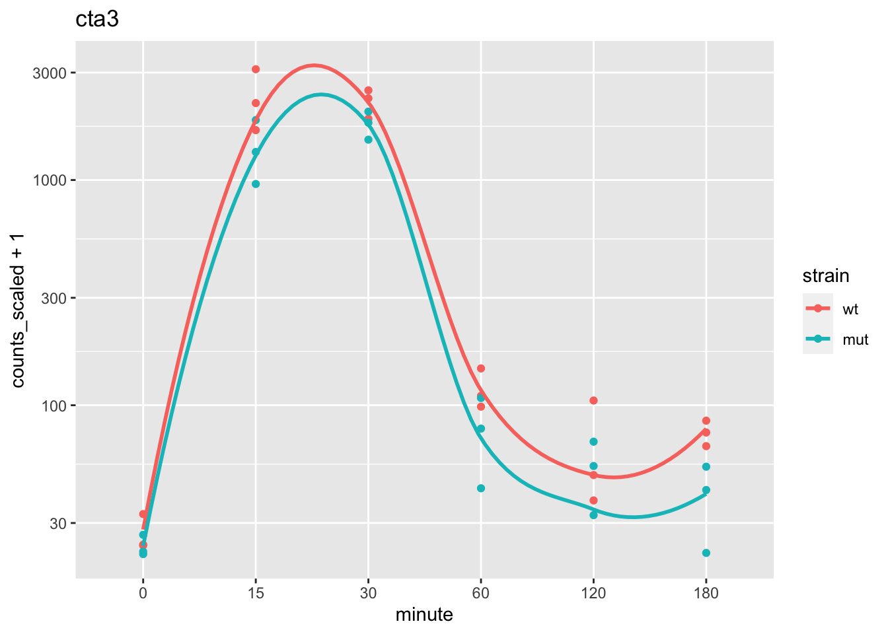

Chapter 8 Many genomic models
Objective: learn how to run many models (think many linear regressions or many machine learning models) in a tidy framework, by “nesting” the genomic dataset and storing the fitted models as rows of a new column in the nested table.
In the previous chapter, we looked at some basic filtering and plotting operations, with perhaps the most interesting operation being a grouped centering of the gene expression. Here we will explore a special case of tidy-style operations on a genomic dataset, in particular a SummarizedExperiment, where we want to run multiple, similar models across groups of features (or likewise, the same could be done to rows).
For some other references to these types of operations, you can check out:
- The “many models” chapter of R for Data Science by Wickham and Grolemund (2017), which introduced the basics of how to run many models in a tidy framework
- The nest documentation in tidyr
- The tidymodels package
Given the size of genomic data, and the way in which
tidySummarizedExperiment abstracts the link between data (assay)
and metadata (rowData and colData), we will consider in this
chapter how the speed of the operations may be impacted by our
choices in setting up the code. In the end, you may find that a more
standard way of running the analyses (e.g. using base R/Bioc) is more
efficient, depending on the cost incurred by the nesting operation,
which we will describe shortly.
We will work with a Bioconductor experiment package fission which contains a dataset created by Leong et al. (2014) PMC4050258:
Here we integrate high-throughput RNA sequencing and label-free quantitative protein mass spectrometry to investigate global changes in transcript and protein levels in the fission yeast stress response.
The experiment considers fission yeast of two strains, wild-type (WT) and atf21\(\Delta\), but here we will not focus on these two strains but just lump the data together, to increase our sample size for the point of building the models.
library(fission)
data(fission)
se <- fission
colData(se)## DataFrame with 36 rows and 4 columns
## strain minute replicate id
## <factor> <factor> <factor> <character>
## GSM1368273 wt 0 r1 wt_0_r1
## GSM1368274 wt 0 r2 wt_0_r2
## GSM1368275 wt 0 r3 wt_0_r3
## GSM1368276 wt 15 r1 wt_15_r1
## GSM1368277 wt 15 r2 wt_15_r2
## ... ... ... ... ...
## GSM1368304 mut 120 r2 mut_120_r2
## GSM1368305 mut 120 r3 mut_120_r3
## GSM1368306 mut 180 r1 mut_180_r1
## GSM1368307 mut 180 r2 mut_180_r2
## GSM1368308 mut 180 r3 mut_180_r3We again use tidybulk to filter to abundant genes and scale counts for library size:
library(tidybulk)
se <- se %>%
keep_abundant(factor_of_interest = strain) %>%
scale_abundance()
assayNames(se)## [1] "counts" "counts_scaled"We make a PCA plot of the log scaled counts, to get a sense for how the samples vary. Note that minute 0 and 180 are similar, as the cells have not yet responded to the stimulus at minute 0. We will later remove these samples for simple modeling.
pca <- se %>%
reduce_dimensions(method="PCA")## Getting the 500 most variable genes## Fraction of variance explained by the selected principal components## # A tibble: 2 × 2
## `Fraction of variance` PC
## <dbl> <int>
## 1 0.293 1
## 2 0.182 2## tidybulk says: to access the raw results do `attr(..., "internals")$PCA`library(ggplot2)
pca %>%
pivot_sample() %>%
ggplot(aes(PC1, PC2, shape=strain, color=minute)) +
geom_point()
We can plot the gene with the most contribution to PC1. Here we will begin working with the data as a tidySE (shortened name for tidySummarizedExperiment):
max_pc1 <- which.max(abs(attr(pca, "internals")[["PCA"]][["rotation"]][,"PC1"]))
max_pc1## SPBC839.06
## 8library(tidySummarizedExperiment)
se %>%
filter(.feature == names(max_pc1)) %>%
ggplot(aes(minute, counts_scaled + 1, color=strain, group=strain)) +
geom_point() +
stat_smooth(se=FALSE) +
scale_y_log10() +
ggtitle( rowData(se)[names(max_pc1),"symbol"] )
Now, let’s consider a hypothetical analysis question: can we predict
the minute (quantitatively) using the log gene expression of a genes
in a neighborhood on the chromosome. While this is mostly a contrived
question, for the purposes of demonstrating nesting of genomic
datasets, you could imagine that there might be modules of responsive
genes positioned along the chromosome, and that a prediction task is
one way to identify genes that are related to an aspect of the
experimental design.
The steps will be:
- Create centered log scaled counts
- Create “blocks” of genes, by tiling the genome and labeling the genes that fall within the same tile
- “Nest” the tidySE such that we can operate on the blocks of genes together
- Run a series of models, each time predicting the
minutevariable using the expression of the genes in the block - Evaluate these models (here simply looking at in-sample training error)
“Nesting” a dataset is an operation, similar to group_by, where a
variable is used to perform grouped operations. We will specify to
nest all the data (columns) besides the grouping variable, such that
we end up with a tibble that looks like:
| grouping variable | data |
|---|---|
| value1 | RngdSmmE |
| value2 | RngdSmmE |
| … | … |
Hence, for every row of the SummarizedExperiment that has value1 for
the grouping variable, we will have a subsetted SummarizedExperiment
(“ranged” refers to the face that it is rowRanges).
Let’s start with the first task.
We compute logcounts and then center and scale these
values. Likewise, we turn the minute variable from a factor into a
numeric, and scale from 0 to 1. These changes would help us compare
coefficients across gene later.
se <- se %>%
mutate(logcounts = log2(counts_scaled + 1),
logcounts = (logcounts - mean(logcounts))/sd(logcounts))
se <- se %>%
mutate(time = as.numeric(as.character(minute)) / 180)
se## # A SummarizedExperiment-tibble abstraction: 210,996 × 20
## # [90mFeatures=5861 | Samples=36 | Assays=counts, counts_scaled, logcounts[0m
## .feature .sample counts counts_scaled logcounts strain minute replicate id TMM multiplier
## <chr> <chr> <int> <dbl> <dbl> <fct> <fct> <fct> <chr> <dbl> <dbl>
## 1 SPAC212.09c GSM136… 23 23.1 -1.70 wt 0 r1 wt_0… 1.18 1.00
## 2 SPAC212.04c GSM136… 37 37.1 -1.42 wt 0 r1 wt_0… 1.18 1.00
## 3 SPAC977.11 GSM136… 155 155. -0.581 wt 0 r1 wt_0… 1.18 1.00
## 4 SPAC977.13c GSM136… 19 19.0 -1.81 wt 0 r1 wt_0… 1.18 1.00
## 5 SPAC977.15 GSM136… 91 91.2 -0.896 wt 0 r1 wt_0… 1.18 1.00
## 6 SPAC977.16c GSM136… 184 184. -0.479 wt 0 r1 wt_0… 1.18 1.00
## 7 SPNCRNA.607 GSM136… 49 49.1 -1.26 wt 0 r1 wt_0… 1.18 1.00
## 8 SPAC1F8.06 GSM136… 105 105. -0.812 wt 0 r1 wt_0… 1.18 1.00
## 9 SPAC1F8.08 GSM136… 151 151. -0.597 wt 0 r1 wt_0… 1.18 1.00
## 10 SPAC11D3.19 GSM136… 22 22.1 -1.72 wt 0 r1 wt_0… 1.18 1.00
## # ℹ 40 more rows
## # ℹ 9 more variables: time <dbl>, symbol <chr>, biotype <fct>, .abundant <lgl>, seqnames <fct>,
## # start <int>, end <int>, width <int>, strand <fct>For demonstration, we will work with just the first chromosome: I.
For our task of modeling the design using gene expression, in blocks along the genome, we need to create tiles to determine which genes to group together. To do so, we need to know how long the chromosomes are. The original publication states:
Sequencing reads were aligned to the fission yeast genome (PomBase database release 11)
Usually we would look for the length of chromosomes from a source that
hosts the reference (e.g. UCSC genome lengths can be obtained using
Seqinfo). In this case, I wasn’t able to find information about this
particular release, so I just guess the length of the chromosome using
the gene with the largest coordinate:
library(plyranges)
rowRanges(se) %>%
filter(seqnames == "I") %>%
summarize(max(end))## DataFrame with 1 row and 1 column
## max.end.
## <integer>
## 1 5556768genes_to_keep <- rowRanges(se) %>%
filter(seqnames == "I") %>%
names()We now filter the se object to remove the 0 time point, and to
keep just the features on chromosome I.
se0 <- se # save the original object
se <- se %>%
filter(time != 0) %>%
filter(.feature %in% genes_to_keep)To make tiles on chromosome I, we just need to specify the extent (here I plug in the largest gene coordinate):
tiles <- data.frame(seqnames="I",start=1,end=5.6e6) %>%
as_granges() %>%
tile_ranges(width=1e5) %>%
select(-partition) %>%
mutate(tile = seq_along(.))
tiles## GRanges object with 56 ranges and 1 metadata column:
## seqnames ranges strand | tile
## <Rle> <IRanges> <Rle> | <integer>
## [1] I 1-100000 * | 1
## [2] I 100001-200000 * | 2
## [3] I 200001-300000 * | 3
## [4] I 300001-400000 * | 4
## [5] I 400001-500000 * | 5
## ... ... ... ... . ...
## [52] I 5100001-5200000 * | 52
## [53] I 5200001-5300000 * | 53
## [54] I 5300001-5400000 * | 54
## [55] I 5400001-5500000 * | 55
## [56] I 5500001-5600000 * | 56
## -------
## seqinfo: 1 sequence from an unspecified genome; no seqlengthsWe now determine which tile the genes fall in (using TSS only, so
that genes fall in a single tile). We can add this data back onto the
tidySE using a left_join:
ranges_tiled <- rowRanges(se) %>%
anchor_5p() %>%
mutate(width=1) %>%
join_overlap_left(tiles) %>%
mutate(.feature = names(.)) %>%
select(tile, .feature, .drop_ranges=TRUE) %>%
as_tibble()
nrow(se) == nrow(ranges_tiled)## [1] TRUE# combining the tile information with the SE
se <- se %>% left_join(ranges_tiled)## Joining with `by = join_by(.feature)`
## Joining with `by = join_by(.feature)`Typically we have a little less than 50 genes per tile:
summary(as.vector(table(rowData(se)$tile)))## Min. 1st Qu. Median Mean 3rd Qu. Max.
## 5.00 44.00 49.00 46.98 51.25 59.00Next, we want to create a nested table, where tidySE objects are
grouped by tile and placed within a column of the table. There are a
few choices on how to proceed. One option would be to pivot_wider
the tidySE, as in this chunk below:
se %>%
filter(.feature %in% rownames(se)[1:5]) %>%
select(.sample, strain, time, .feature, logcounts) %>%
pivot_wider(names_from = .feature, values_from = logcounts)## tidySummarizedExperiment says: A data frame is returned for independent data analysis.## # A tibble: 30 × 8
## .sample strain time SPAC212.09c SPAC212.04c SPAC977.11 SPAC977.13c SPAC977.15
## <chr> <fct> <dbl> <dbl> <dbl> <dbl> <dbl> <dbl>
## 1 GSM1368276 wt 0.0833 -1.30 -1.51 -0.705 -1.85 -0.617
## 2 GSM1368277 wt 0.0833 -1.03 -2.01 -1.19 -1.27 -0.677
## 3 GSM1368278 wt 0.0833 -0.993 -2.11 -1.13 -1.88 -0.364
## 4 GSM1368279 wt 0.167 -0.802 -1.40 -0.690 -0.324 -0.966
## 5 GSM1368280 wt 0.167 -0.574 -1.06 -0.847 -0.399 -0.835
## 6 GSM1368281 wt 0.167 -0.685 -0.880 -0.685 -0.571 -0.779
## 7 GSM1368282 wt 0.333 -0.744 -1.56 -1.10 -1.45 -1.45
## 8 GSM1368283 wt 0.333 -0.959 -1.58 -0.910 -0.828 -1.11
## 9 GSM1368284 wt 0.333 -0.832 -1.51 -0.874 -1.07 -1.01
## 10 GSM1368285 wt 0.667 -1.03 -1.49 -0.866 -1.74 -1.40
## # ℹ 20 more rowsThis ends up being a bit slower than just extracting the information
with assay and transposing it.
First let’s create our nested dataset:
library(purrr)
nested <- se %>%
nest(data = -tile)
nested## # A tibble: 56 × 2
## tile data
## <int> <list>
## 1 1 <RngdSmmE[,30]>
## 2 2 <RngdSmmE[,30]>
## 3 3 <RngdSmmE[,30]>
## 4 4 <RngdSmmE[,30]>
## 5 5 <RngdSmmE[,30]>
## 6 6 <RngdSmmE[,30]>
## 7 7 <RngdSmmE[,30]>
## 8 8 <RngdSmmE[,30]>
## 9 9 <RngdSmmE[,30]>
## 10 10 <RngdSmmE[,30]>
## # ℹ 46 more rowsNow, by row, extract out and transpose log scaled counts:
nested <- nested %>%
mutate(trainx = map(data, \(d) {
t(assay(d, "logcounts"))
}))
nested## # A tibble: 56 × 3
## tile data trainx
## <int> <list> <list>
## 1 1 <RngdSmmE[,30]> <dbl [30 × 20]>
## 2 2 <RngdSmmE[,30]> <dbl [30 × 54]>
## 3 3 <RngdSmmE[,30]> <dbl [30 × 41]>
## 4 4 <RngdSmmE[,30]> <dbl [30 × 54]>
## 5 5 <RngdSmmE[,30]> <dbl [30 × 44]>
## 6 6 <RngdSmmE[,30]> <dbl [30 × 53]>
## 7 7 <RngdSmmE[,30]> <dbl [30 × 45]>
## 8 8 <RngdSmmE[,30]> <dbl [30 × 47]>
## 9 9 <RngdSmmE[,30]> <dbl [30 × 41]>
## 10 10 <RngdSmmE[,30]> <dbl [30 × 59]>
## # ℹ 46 more rowsWe fit an elastic net model (Friedman, Hastie, and Tibshirani 2010).
library(glmnet)
y <- colData(se)$time
nested <- nested %>%
mutate(fit = map(trainx, \(x) {
glmnet(x = x, y = y, alpha = .5, lambda = .1)
}))
nested## # A tibble: 56 × 4
## tile data trainx fit
## <int> <list> <list> <list>
## 1 1 <RngdSmmE[,30]> <dbl [30 × 20]> <elnet>
## 2 2 <RngdSmmE[,30]> <dbl [30 × 54]> <elnet>
## 3 3 <RngdSmmE[,30]> <dbl [30 × 41]> <elnet>
## 4 4 <RngdSmmE[,30]> <dbl [30 × 54]> <elnet>
## 5 5 <RngdSmmE[,30]> <dbl [30 × 44]> <elnet>
## 6 6 <RngdSmmE[,30]> <dbl [30 × 53]> <elnet>
## 7 7 <RngdSmmE[,30]> <dbl [30 × 45]> <elnet>
## 8 8 <RngdSmmE[,30]> <dbl [30 × 47]> <elnet>
## 9 9 <RngdSmmE[,30]> <dbl [30 × 41]> <elnet>
## 10 10 <RngdSmmE[,30]> <dbl [30 × 59]> <elnet>
## # ℹ 46 more rowsWe use the elastic net model, to predict the design from the gene expression (a variable number and set of genes per tile):
nested <- nested %>%
mutate(
pred = map2(trainx, fit, \(tr,fit) {
predict(fit, newx = tr)[,1]
}),
n = map_dbl(data, nrow),
in_r2 = map_dbl(pred, \(pred) cor(pred,y)^2)
)
nested## # A tibble: 56 × 7
## tile data trainx fit pred n in_r2
## <int> <list> <list> <list> <list> <dbl> <dbl>
## 1 1 <RngdSmmE[,30]> <dbl [30 × 20]> <elnet> <dbl [30]> 20 0.851
## 2 2 <RngdSmmE[,30]> <dbl [30 × 54]> <elnet> <dbl [30]> 54 0.908
## 3 3 <RngdSmmE[,30]> <dbl [30 × 41]> <elnet> <dbl [30]> 41 0.906
## 4 4 <RngdSmmE[,30]> <dbl [30 × 54]> <elnet> <dbl [30]> 54 0.880
## 5 5 <RngdSmmE[,30]> <dbl [30 × 44]> <elnet> <dbl [30]> 44 0.912
## 6 6 <RngdSmmE[,30]> <dbl [30 × 53]> <elnet> <dbl [30]> 53 0.892
## 7 7 <RngdSmmE[,30]> <dbl [30 × 45]> <elnet> <dbl [30]> 45 0.894
## 8 8 <RngdSmmE[,30]> <dbl [30 × 47]> <elnet> <dbl [30]> 47 0.856
## 9 9 <RngdSmmE[,30]> <dbl [30 × 41]> <elnet> <dbl [30]> 41 0.890
## 10 10 <RngdSmmE[,30]> <dbl [30 × 59]> <elnet> <dbl [30]> 59 0.894
## # ℹ 46 more rowsFinally we plot the prediction \(R^2\), and compare to the number of genes in the models:
library(ggplot2)
ggplot(nested, aes(n, in_r2)) +
geom_point() +
ylab("in-sample r2")
Questions:
- How else could we have performed the analysis, without doing the nesting operation? Would this have been faster? What other variables would need to be created to keep track of the many models?
- What advantages or disadvantages can you think about for the different ways of running multiple models across large genomic datasets?